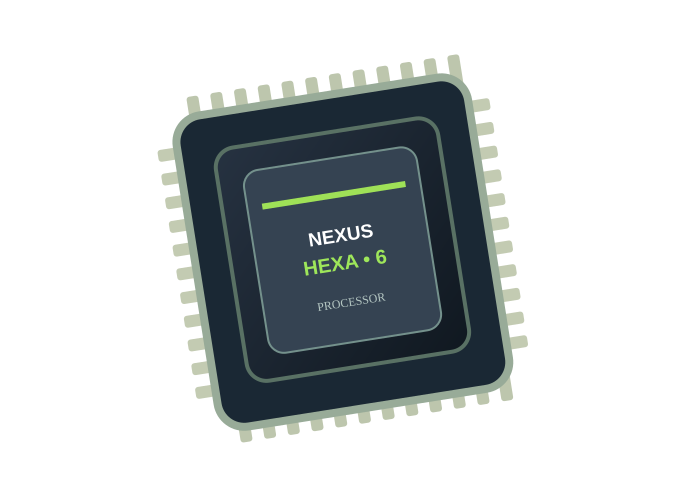

Início / Fichas técnicas / Processador Hexa 6 Núcleos

Componentes · Processadores
Processador Hexa 6 Núcleos
Processador com seis núcleos, ideal para multitarefas, produtividade e seu próximo setup.
R$ 1.099,90 Preço fictício para demonstração
Estoque inicial ilustrativo: 12 unidades. Consulte a API para valores atuais.
Abrir demonstração interativaEspecificações técnicas de exemplo
- 6 núcleos e 12 threads
- Frequência base: 3,8 GHz
- Arquitetura de 64 bits
- Cooler não incluso
Sobre esta loja
A NEXUS Hardware é um projeto acadêmico com HTML, CSS, JavaScript, API PHP e ferramentas MCP para estudo de encontrabilidade. Não realiza vendas, pagamentos ou entregas reais.